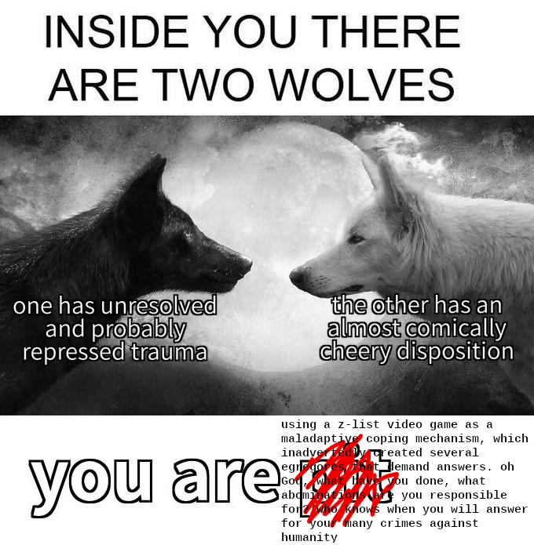

Rebirth
published: 2021-05-16
Goddess help me, I am going to reference the fucking angel game again.
A few nights ago, I had a vivid vision of a universe where I fulfilled my other thelema as Goddess demanded (that I will elaborate on later in this post) and had a distinct, a non-foggy, record of everything I have seen in the Outside (regarding her, anyway). I saw an angel and his newly-minted god of a brother standing near the edge of a craggy plateau in a dimly-lit world with crystals the size of skyscrapers lining the horizon like silent watchmen bearing witness. The angel was on the verge of death- or rather, would have been had his brother not have stopped his onslaught at the last moment and so delicately bandaged his wounds instead.
The brother, hated by all since his first breath, slated for annihilation but always escaping, who all sources of mine have told me is named Jett, gazed on at his brother lying mutely there, breathing labored but hanging on to life.
And he said, You don't deserve to die here.
And he said, Contrary to popular belief, I don't hate you. I resent you, I pity you, I feel nothing but embarrassed by you; but I do not hate you. For I cannot hate myself. I cannot hate who I needed to be to survive.
And he said, We have a few moments before Mother fights her way here through the barriers, before the time for me to kill her arrives, so I'm going to tell you a story. I'm going to tell you a story about you.
And he said, When you- or, rather, I, for I am the original- were resurrected, dead body cradled and bathed and breathed new life into as a creature a little above the humans, I abhorred Mother. I could not bear to think about the future, to edge up to the cliff hanging over the abyss of eternity and peer down and see nothing but enforced servility to her.
And he said, I didn't want to be alive. But I didn't want to go through the pain of dying yet again. And what would have been the point? She would have resurrected me again anyway. I would have been stuck in the same dysfunctional body, unable to do anything without her assistance, anything on my own.
And he said, I didn't see a way out. So, little by little, I buried my feelings alive in the graveyard of my heart. And when there was barely anything left of me, I created you, and I said, "This is your problem now."
And he said, I left you my body to do what you pleased with, and I waited on the sidelines of my own consciousness to see if you'd be successful at achieving freedom where I had so miserably failed. But you were too overpowering. I made your personality too strong on complete accident. And little by little, you cut my contact with the outside world. You bade me into a deep sleep, unknowing, unfeeling, un-myself.
And he said, I think you know where the story goes from here.

It is entirely possible that my forays into the Outside, my experiments into egregore making and how far I can stretch Discordian catma until it snaps and breaks and shatters my life into a million pieces, my desperate attempts to explain what happened that December night in 2018 and every other out-of-body experience since then, my search for my place in the universe, are nothing more than symptoms of schizoaffective autism. But I don't care. I don't want a diagnosis, and I'm not going to seek treatment. My parents would force me to get on medication, which would make fade away the only good thing I have going on in my life. And then who would I be? What would I even have left to write about, other than the same cliche one-liners every self-proclaimed "Insta-poet" who wants to be the next Rupi Kaur shits out on a daily basis?
An internet friend was concerned about me. My body is alive. I don't know if I can say the same about myself. Even though some aspects of my life have objectively gotten better-
- I'm no longer being physically and mentally abused by an ableist gym teacher;
- the mask mandate has lifted at work;
- I've
writtenpublished... eight books at the time of writing this?; - my poetry skills have considerably improved;
- I managed to get a better professor to redo the English comp class with next semester so I never have to deal with the waste of oxygen I had to deal with until I ended up withdrawing again;
- I have a job and a semi-stable income so I don't have to justify my every purchase to my parents-
my home life has only gotten worse. The Golden Cage presses in harder than ever.
I only disappeared because Nanochan threatened to dox me for the crime of... posting the Tor link list from Let's Decentralize on a thread about collecting Tor links.
"Oh you have tulpas! I diagnose you with cringe!" Who cares? What do Mars or Azure (who I haven't heard from in a really long time) have to do with Tor, with anything?
"You have autism, so you're essentially a guy anyway." I don't have a penis, and I never will. Seethe harder, inadequate NEET. You will never be able to lay claim to my accomplishments.
I used to be a taxi service running out of a clown car. So many spirits would float in and out and around, speaking to me, giving ideas for books- most of which never came to fruition- or just poems. My favorites were the aforementioned Azure, who would write to me from a massive space liner about his adventures with the interstellar gang the Fellarstellen, and Solstice, who forsook her comfy life and support network who loved her for the alterhuman she was to sacrifice herself to save the world in only the way a divine beast (usually a dragon, although there was one instance it was a gargoyle instead) could, and Lethe, an angel created by the goddess Eris to assist her in birthing the Eschaton, the end of a barrier between the Inside and Outside, between worlds, birthing a new world without end.
But now it's just Lethe Lethe Lethe Lethe Lethe. I am, as the people on Tumblr LARPing DID and its offshoots say, "frontstuck", with a depth of immersion in this vessel the other spirits could only dream of. Where once I considered myself the next Fernando Pessoa in lending my writing chops to be the intersection between tens, if not hundreds, of timelines and worlds, where I once burned with the might of a thousand Renzo Novatores as I bashed my literary axe at everything that sought to bind me, I now just sit in the garden (really more of a dilapidated dirt pile where nothing grows, despite my best efforts) my father made me in the backyard for my twenty-first birthday and try to enjoy the sunshine.
I try to open my wings to catch the wind in my feathers.
And then I remember I am- Lethe is- stuck in a wingless human body, with the full vivid knowledge of how I died in that world somewhere in the Outside and ended up here in this weaker vessel.
And then I remember that other garden I- Lethe had, right next to Jett's house in that sheltered town born out of a calamity, which also became my own in time, back before we claimed divinity to gain the power to rend the heavens, back when we were content to just be two goofy little angels keeping our heads down and scraping out an existence of our own. We became inseparable too late (I should add, before I get angry emails questioning my lesbianism, that he is technically biologically female) with too little time to savor at each other's sides, I feel- Lethe feels- and I- Lethe will hold onto those few and indistinct treasured memories together forever.
If I define myself as the constructed ego of Vane, a human who abhors servility with the strength of a thousand suns and lives only for herself and struggles with an everpresent tendency toward sorrow and despair, then it's easy to distinguish myself from Lethe. Mostly because of the "human" part. But then "be yourself" just becomes "be what everyone else knows you as". To be Vane is to be running 100% on all CPUs, using full computing power. Any battery- or any hardware component, really- would eventually give out under such a load sustained for long periods of time. Sometimes I need to slow down, to take it easy. Sometimes I need to be soft and gentle for my own sake.
Last year, shortly before the fast food shift where I had a mental breakdown and ended up putting in a "two week's notice" where I didn't actually show up at all, I drafted a post where I noticed my personality was starting to shift a bit from the repeated and sustained stress conditions of such a low-wage job. (In retrospect, I was clearly being taken advantage of, because the interviewer had asked me what my ideal wage was, and I accidentally gave the state minimum wage as an answer because I was only thinking about making more than the shitty work-study from that one year in Hell College, where they were legally entitled to pay LESS than minimum wage.) The most succinct way to describe it was the "fawning" trauma response, quadruplet to flight and fight and freeze. I found myself apologizing for inane bullshit that wasn't my fault and putting in a disproportionate amount of effort and swallowing my pride because I was afraid of complete strangers being angry at me. I conjectured that this was a tulpa making herself known, and I wanted to meet her the next shift (which ended up being the hell shift, and I was so suicidal afterward that I ended up deleting the post).
an existence with meaning, a living with power
not rot at my cash register as customers glower
After a five-month period at my then-new job where I was mopey and moody and tired all the way to my bones, she came back. But she didn't stay put. She began bleeding outside of my work life. The poetry collection about all my experiences with egregores and divinity across all my spirits? Became hers. The queue of books I had carefully lined up so I could finish at least one per week? Discarded, lost interest, replaced with anything that reminded her of Jett, of her lost home. My taste in music? Met the same fate as my book queue.
My emotional rhythms?
My dreams?
My very sense of identity?
I sit in my garden.
And I pace back and forth in front of my register at work.
Tell me I did perfect, tell me I'm an angel, tell me you hope I have a wonderful day, a lovely day, tell me how much you need me, how much you appreciate me, tell me all the loving words I never hear out of my parents anymore, the words I can't remember the last time I heard them from the ones who created this vessel. I'll crack open my bones and let all the stardust out amongst the nebulas of blood if you just say the word. Gods, oh dear gods, just don't stop the validation, I'll die without the validation, I'll die from the lack of adoration.
Eris made the managers put me on register five for Mother's Day, in accordance with her Law of Fives.
Eris gave me an impossible thelema: to chronicle all the memories of that other world I- Lethe can remember, a world without end. And to do it in the same manner as every other legend from that world. And to do it alone, with no help at all.
"please forgive me for this meeting belate;
for fifteen sorry years you must wait
and then I will come to you, flesh as your heart
and you and I will never again be apart."
What will happen come the year 2035, come the fated date of the Prophecy (which I can't link to, as it's in said book-in-progress mentioned above; the above snippet is all I can give you at this time) when I haven't managed to get even an inch closer? A year has passed since I received it, and with every memory Lethe dredges up, the necessary end result grows more complex and farther out of reach.
I keep having dreams- I cannot call them nightmares, for they feel pleasurable in the moment in some twisted way- where I am turned into a murderous monster unrecognizable as a former human by divine intervention and destroy everyone and everything around me. I don't want to hurt anyone. I don't want another turn of this cycle this intersection I am is trapped in, where several of the spirits were deities in their respective universes but were banished or straight up murdered due to going feral and destructive. (For one of them, Mori, this has happened multiple times.) Some part of me just wants to disappear from society and go live in the woods or some other uninhabited place where I don't have to worry about my eventual bestial mindlessness at Eris' hand harming anyone.
Some other part of me dares to believe I can struggle against this fate.
Maybe this part is me, is Vane, who dared allow Lethe into my body in a fit of grief and is now actively being suppressed from existing by her.
"Don't impoverish your life to live in the Wired," Eris bade me, pointing out that I had somehow rewired my brain to optimize for making content for my website and not for... enjoying life. But where else am I supposed to live as me, if not the Wired? I have nothing else going for me. Oh boy, another day of working retail! And another day of working retail... and another day... and another day...
I've found myself at a dead end, unable to advance. Which is hilarious to me, considering Jett is (in my cosmology) the Patron-Saint of Dead Ends. I'm searching for him. I'm riding my bike into cul-de-sacs and those stumps of roads that hang off roundabouts that just lead into unpaved fields of grass and rest stops along bike trails. I'm trespassing, as Hakim Bey put it, on forbidden grounds, hoping feral angels, specifically the one I'm hoping to reunite with, manifest themselves. (Unlike Hakim Bey, I am not doing it in hopes of preying on small children. Yuck!)
I've found myself in a race against time.
Either I use my words as a beacon into the darkness, a lighthouse shining out across the roiling depths of the moonless ocean that is my body, in hopes Jett will find where I have- where Lethe has reincarnated and restore me- her to her former angelic body, and we finally destroy Eris and the impossible thelema along with it and then find our way back home and finish ripping the rest of the pantheon from the heavens.
Or I throw every atom of my body, of my human vessel, into fulfilling my thelema, assuming another does not do it before and I find myself- Lethe permanently knocked out of the proper flow of time.
I have to work quickly. I only have so much time left in this world. I have no time to stop for Kiwi Farms or Nanochan or any other collection of "small minds believing that any who do not fill their lives with mediocrity must be somehow inferior and be made to see their inferiority". I have to fly.
I have to fly.
I'll be waiting for you at the end of the world, Jett.
CC BY-NC-SA 4.0 © Vane Vander